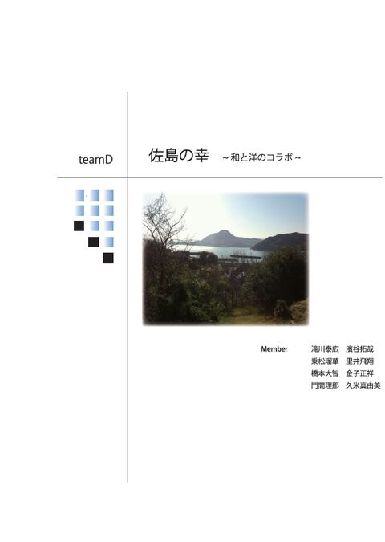
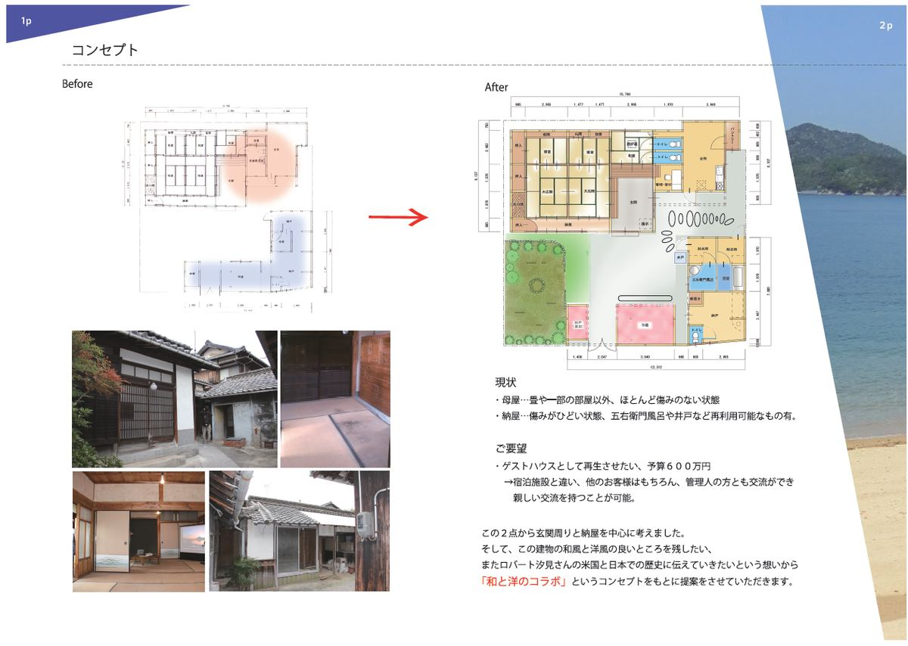
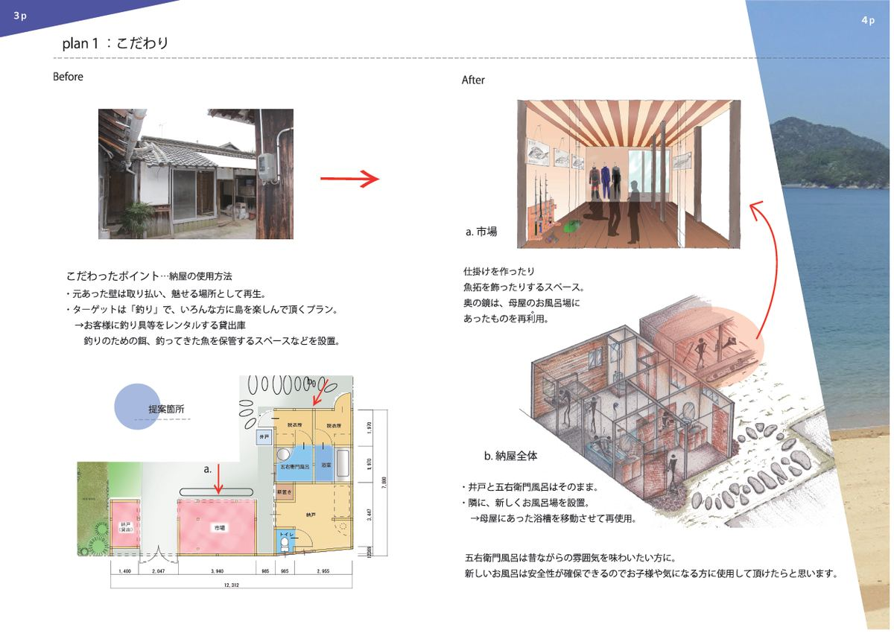
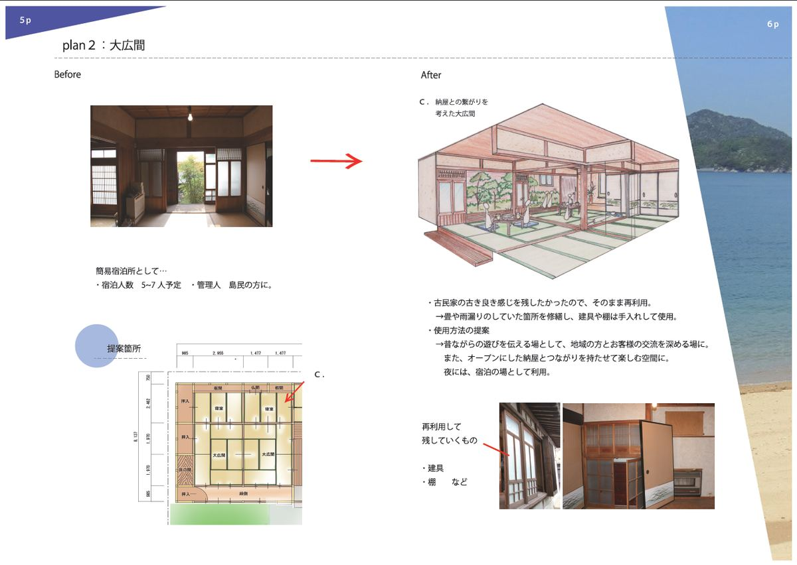
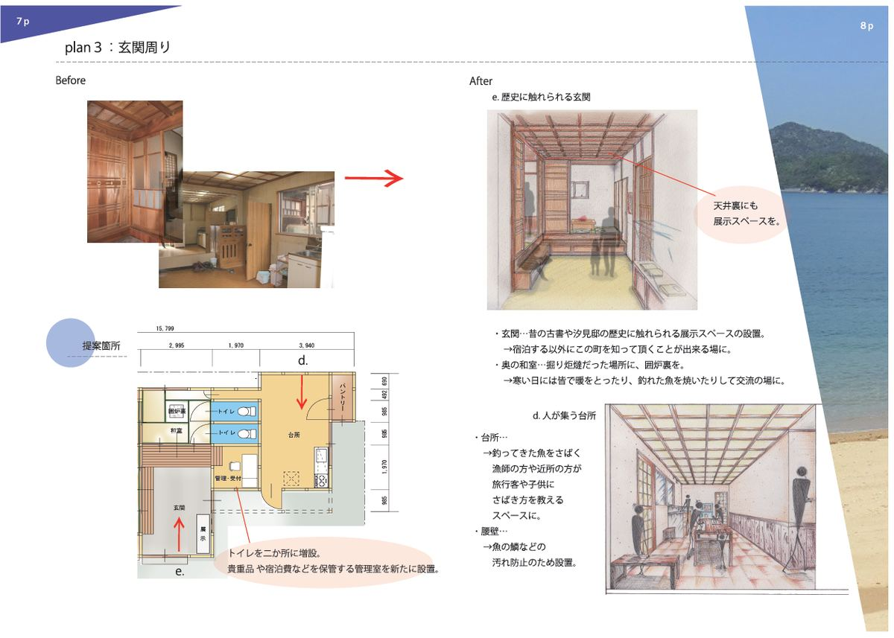
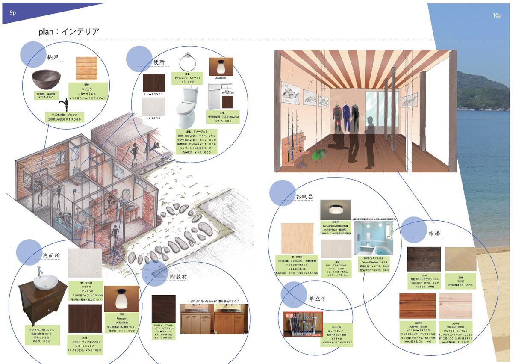
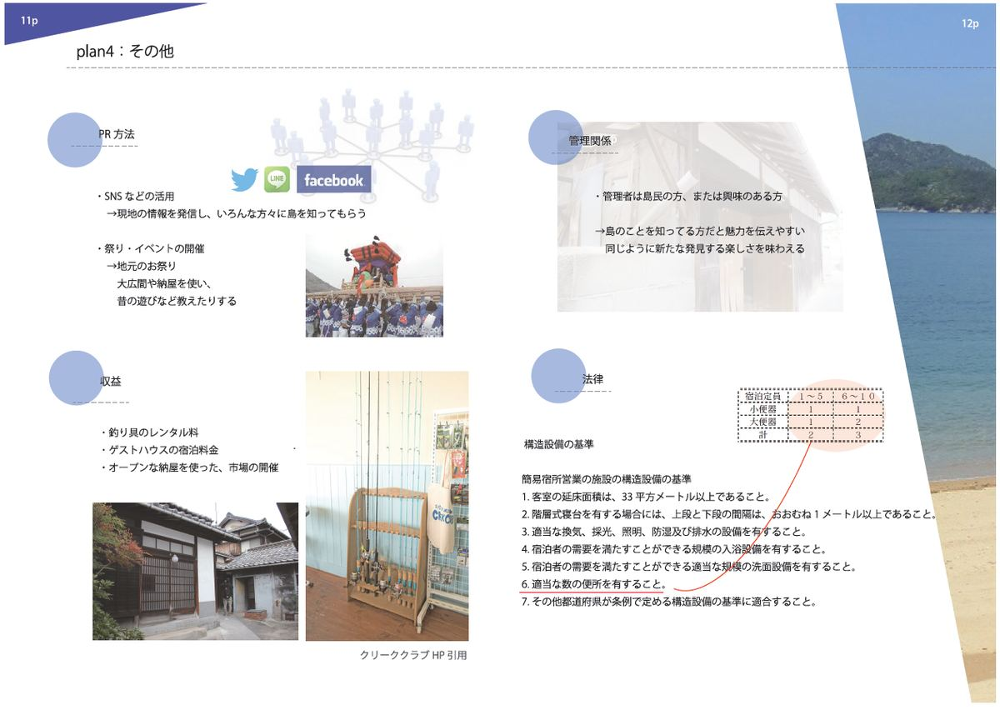

古民家再生の記録
学生による古民家再生プロジェクト
汐見の家のリノベーションは、（一社）愛媛県古民家再生協会と河原アート・デザイン専門学校のコラボレーションによる「学生による古民家再生プロジェクト」の第二弾に採用して頂きました。
2014年11月の現地調査の後、学生さん達は6チームに分かれて再生プランを検討、2015年1月に同校でプレゼンテーションが行われました。
力の入ったプレゼンマテリアルに、模型まで用意してくれたチームもあり、5時間をかけてじっくりと説明して頂きました。






